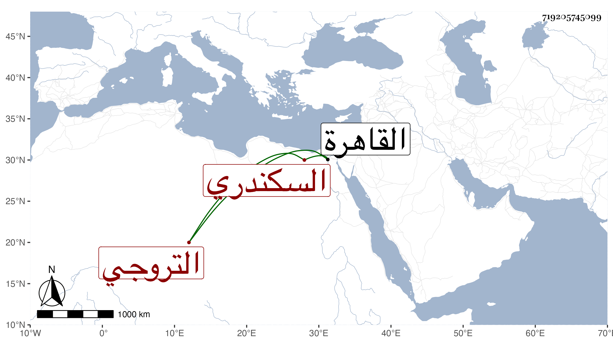

0902Sakhawi.DawLamic.ITO20230111-ara1.EIS1600.719205745099
Biography ID: 719205745099
550
فاضل بن مخلوف بن خلف بن سليمان الشمس التروجي السكندري نزيل القاهرة وأحد المؤذين بالقصر السلطاني ، مات في ربيع الأول سنة ثلاث وثمانين وكان له قبول في أذان وتسبيحه ورزق في هذه الأيام حظوة زائدة وكثر تنقله إلى الأماكن ليؤذن فيها إجابة للسائلين له فيه وربما فعله في بعضها ابتداء بدون مسألة سمعته غير مرة رحمه الله .
